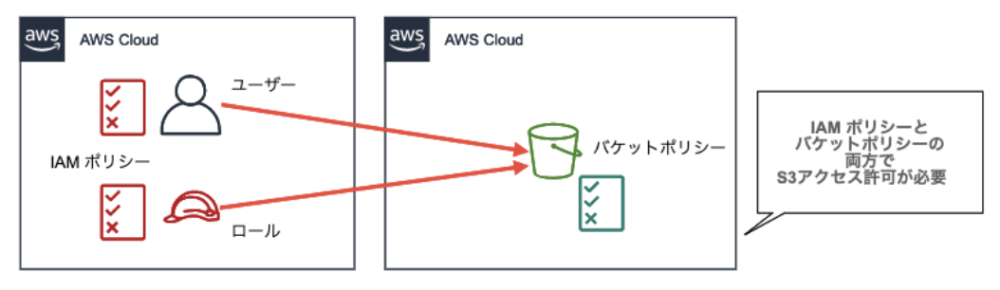
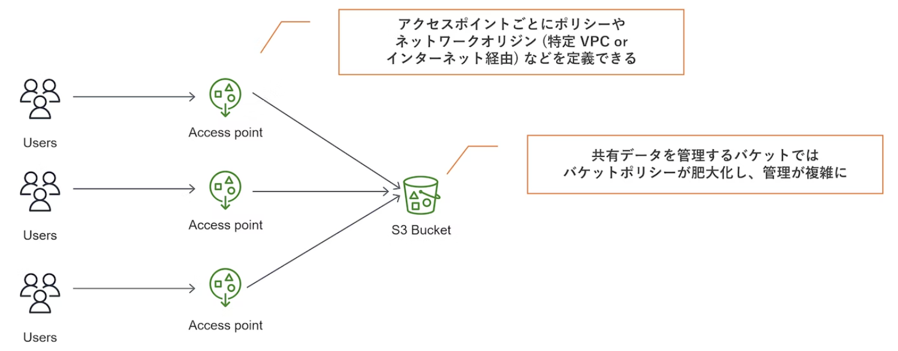
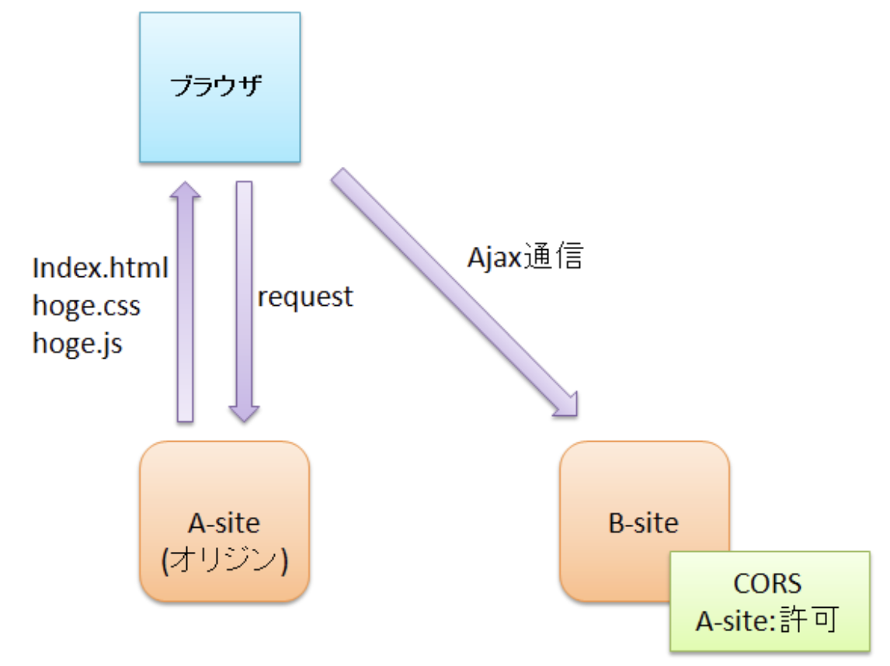
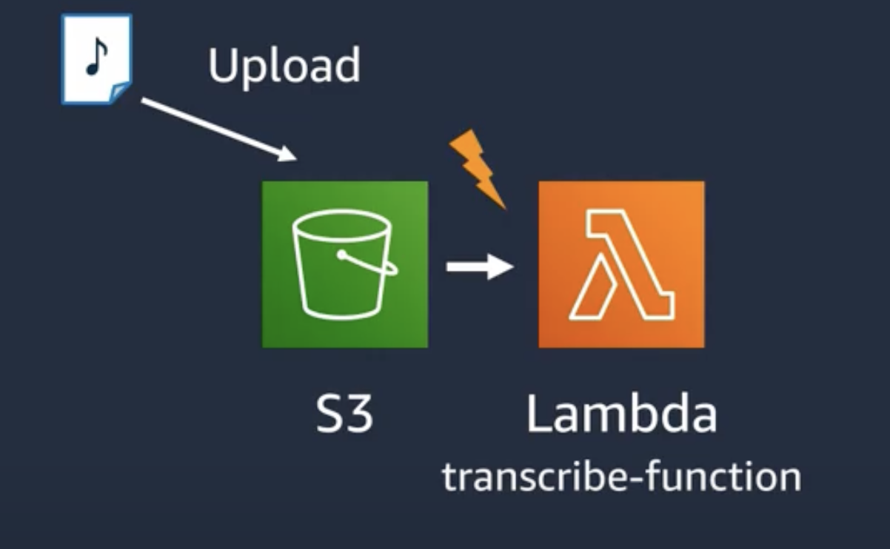
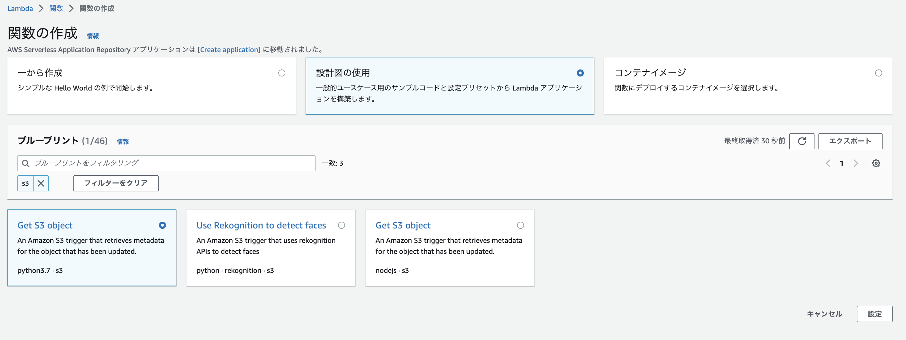
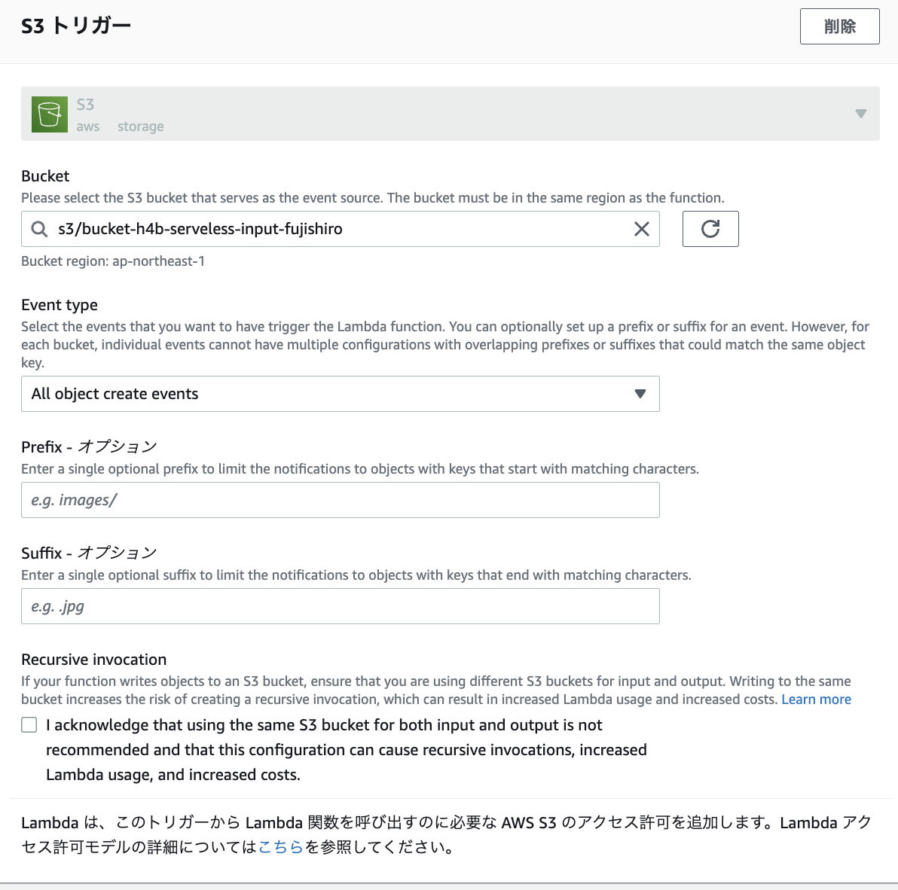
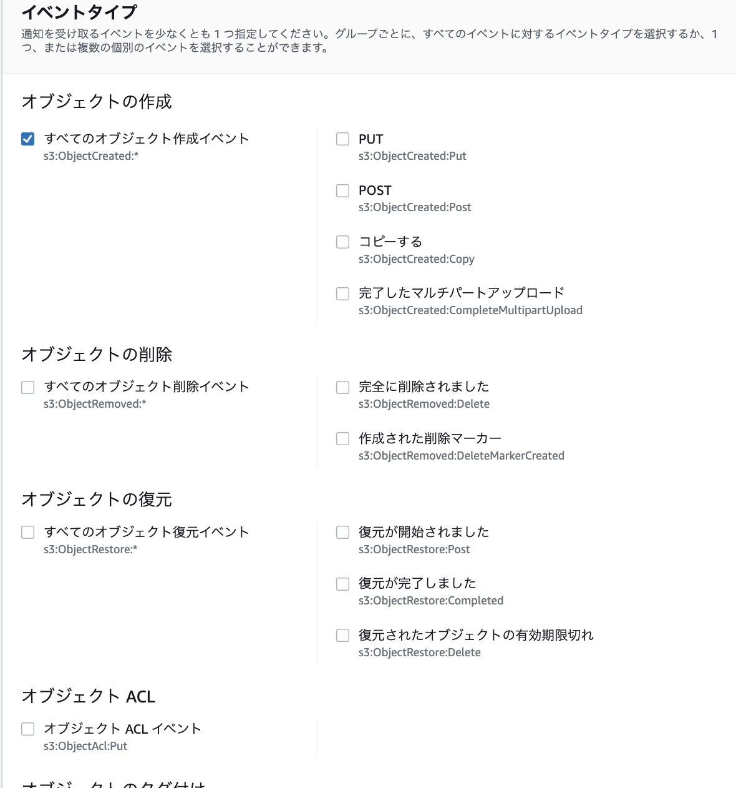

8. S3¶
8.1. 基本情報¶
S3はイレブンナインの耐久性がある高い耐久性のオブジェクトストレージである。 オブジェクトストレージでは、データをオブジェクトと呼ばれる単位で管理し、固有のURLやメタデータが付与され、HTTP/HTTPS通信でファイルの読み書きが可能。
8.1.1. オブジェクト¶
PCで扱われるファイルと同じ単位で保存する実態データをオブジェクトと呼ぶ。
１オブジェクトあたり5TBまでデータサイズが許容される。
オブジェクトは異なる3ヶ所のAZに格納されるため、一時的に差分が生まれる結果整合モデルが採用されている。
8.1.2. バケット¶
オブジェクトを格納する場所で、すべてのリージョンの中で一意である必要がある点に注意
バケット単位で、バージョン管理することが可能。 絵で見て 3分でおさらい
8.1.3. キー¶
オブジェクトを指し示すパスで、バケットないでユニークである必要がある。
8.2. S3のストレージクラス¶
S3では、アクセス頻度や用途に応じたストレージクラスが準備されている。
S3標準
高耐久・高可用性でデフォルトストレージS3 Inteligent-Tiering
アクセス頻度に応じて、ストレージタイプを変更してくれるため、アクセス頻度にパターンががある場合に適切S3標準-低頻度アクセス（IA:Infrequent-Access)
取り出しに料金が発生するS3 1ゾーン IA
単一のAZに格納し、取り出しにも料金ががかかるS3 Glacier
取り出しにお金がかかる上に時間もかかる。 S3から一定時間がかかるとGlacierに移すというライフサイクルの設定も可能 クライアントからGlacierに直接アップロードすることも可能S3 Glacier Deep Archive
年に１,2回しかアクセスされないようなデータに適しており、取り出しには最大12時間かかる
8.3. S3のセキュリティ保護¶
S3では、インターネットに直接公開することが可能なため、セキュリティ対策を徹底する必要がある。
ユーザーポリシー、バケットポリシー、ACL(Access Control List)を利用して、オブジェクトへのアクセス制御を設定することができる。
8.3.1. ユーザーポリシー¶
IAユーザーに対して、アクセス権限を設定することができる。
実態は、IAMポリシーと同様で以下の項目に具体的な値を設定して定義する。
Effect:許可や拒否
Principal:対象となるIAMユーザー
Action:具体的なオペレーション（GETなど）
Resource:対象となるオブジェクトのキー
8.3.2. バケットポリシー¶
バケットに対して、アクセス権限を設定することができる。
実態は、ユーザーポリシー同様にIAMポリシーと同様で以下の項目に具体的な値を設定して定義する。
Effect:許可や拒否
Principal:対象となる
Action:具体的なオペレーション（GETなど）
Resource:対象となるオブジェクトのキー
さらにバケットポリシーではCondition要素を利用することで、IPアドレス指定やMFAを利用したアクセス制御、特定VPCエンドポイントの制御が可能
8.3.3. クロスアカウント¶
ユーザーポリシーとバケットポリシーは、対象が異なるだけで定義内容は同じ。 すなわち、アクセスするユーザーととバケットの所有者が同一の場合、どちらかが設定されておけばアクセス数rことができる。
一方で、アクセスするユーザーと、バケットの所有者が異なるクロスアカウントの場合、以下の設定が必要
アクセスする側のユーザー：ユーザーポリシーを設定
バケットの所有者：バケットポリシーを設定

8.3.4. ACL¶
バケットおよびオブジェクトに設定するアクセス制御
AWSアカウントに所属しない不特定多数のユーザーへのアクセス制御をしたい場合に利用する
ACLでは、ユーザーを４つのグループにざっくりと区分けしていて、それぞれのグループに対して、アクセス許可をする。
バケット・オブジェクト所有者
バケットやオブジェクトを所有しているユーザーAll User
AWSへアクセス可能なすべてのユーザー（アカウントの有無も問わない）Authenticated Users
認証された任意のAWSアカウントユーザーLog Delivery
サーバーアクセスログを記録するグループ
これらと、アクセス許可の組み合わせをバケットやオブジェクトに設定することが可能だが、事前に準備されたACLを利用することが多い
プライベートACL
所有者にFULL_CONTROLを付与する形で、デフォルトはこちらパブリックACL
所有者にFULL_CONTROLを付与し、ALL UsersにREADを与える。
8.3.4.1. ブロックパブリックアクセス¶
意図しない、パブリックアクセスを抑止するための機能
BlockPublicAcls
パブリックアクセスを許可したACLの設定の更新や付与されたオブジェクトのアップロードを許さないIgnorePublicAcls
パブリックアクセスを許可するACLが設定されたバケットやオブジェクトがあってもパブリックアクセスできないようにするBlockPublicPolicy
パブリックアクセスを許可したバケットポリシーの設定・更新を許可しないRestrictPublicBuckets
パブリックアクセスを許可したバケットポリシーが存在しても、パブリックアクセスおよびクロスアカウントが無視される
8.3.5. アクセスポイント¶
バケットにアクセスしてくるユーザーが増えた際に、バケットポリシーの管理が煩雑になる課題があった。 この課題に対して、ユーザーごとにアクセスポイントを作成して、アクセスポイント単位で、アクセス制御することが可能となった。

8.4. CORS(Cross Origin Resource Sharing)¶
バケット単位でCORSを有効化することができる。
そもそもCORSとは？
ブラウザなどがセキュリティの理由から、アクセスしたURLと同一のドメインの静的コンテンツのみを取得してレンダリングする仕様となっている。
すなわち、異なるオリジン（ドメイン＋ポート番号）の静的コンテンツリソースの取得を防止している
これは、クロスサイトスクリプティングを防止するため

Ajaxなどで、ブラウザで実行されるスクリプトからオリジンを跨いで静的リソースを取得したい場合、接続先のオリジンでCORSの設定を有効化する必要がある。 S3側でCORSを許可するオリジンやメソッドを許可しておけば、CORSヘッダを含むリクエストに正常に返答することができる。
8.5. 静的ウェブサイトホスティング¶
S3にWebサーバーの役割を付与することで、アップロードしたHTMLサイトなどの静的なウェブサイトを一般公開すること
バケットの設定でこの機能を設定すると、以下の形式でWebサイト用のURLが発行される
http://<bucket-name>.s3-website-<region>.amazon.com
8.5.1. 手順¶
バケットのブロックパブリックアクセス設定で、ブロックをオフにする

静的ウェブサイトホスティングを許可する
バケット>プロパティ>静的ウェブサイトホスティング
「有効にする」をせんてくして、最初に表示するインデックスドキュメントを選択

アクセスポリシー
バケット>アクセス許可>バケットポリシーの設定
{
"Version": "2012-10-17",
"Statement": [
{
"Sid": "PublicReadGetObject",
"Effect": "Allow",
"Principal": "*",
"Action": [
"s3:GetObject"
],
"Resource": [
"arn:aws:s3:::[YOUR BUCKET NAME]/*"
]
}
]
}
8.6. S3のイベントとLambdaの連携¶
8.6.1. H4bの全体像¶
AWS Lambda と AWS AI Services を組み合わせて作る音声文字起こし & 感情分析パイプライン にていおてS3のイベントを起因としたLambdaの呼び出しが実装されているので、こちらを参考に手順を整理する。

8.6.1.1. S3の作成¶
バケット名はユニークにする。
8.6.1.2. Lambdaの作成¶
関数の作成で、設計図の使用をして、pythonのGet-S3-Objectを選択する。

関数の詳細設定においてS3のトリガーの設定でバケットやイベントタイプを指定する。
イベントタイプ：LambdaをキックすS3イベントを指定できる。
Prefix：イベントの対象とする先頭の対象制限（ディレクトリ制限など）
Suffix：イベントの対象とする後尾の対象制限（拡張子制限など）

Lambdaのコードでは、eventから、バケット名やオブジェクト名を取得している。
import json
import urllib.parse
import boto3
print('Loading function')
# PythonからAWSのサービスを連携できるboto3を使っている
s3 = boto3.client('s3')
def lambda_handler(event, context):
#print("Received event: " + json.dumps(event, indent=2))
# eventからbucket名を取得
bucket = event['Records'][0]['s3']['bucket']['name']
# eventからオブジェクト名を取得
key = urllib.parse.unquote_plus(event['Records'][0]['s3']['object']['key'], encoding='utf-8')
try:
# ここの部分を要件に合わせて修正する。
response = s3.get_object(Bucket=bucket, Key=key)
print("CONTENT TYPE: " + response['ContentType'])
return response['ContentType']
except Exception as e:
print(e)
print('Error getting object {} from bucket {}. Make sure they exist and your bucket is in the same region as this function.'.format(key, bucket))
raise e
試しに、S3にファイルをアップロードすると、CloudWatchのログにコンテントタイプが出力される。
8.6.1.3. S3イベントの変更¶
Lambdaの設定後、Lambdaを起動するイベントを変更したい場合、バケット、プロパティ、イベント通知から変更が可能

8.6.2. S3間でオブジェクトをコピーする¶
基本的には、S3のバケットを二つ作成して、Lambdaに準備されている設計図からgetS3Objの設計図を作成する。
Lambda側のコードに以下を設定する。
S3のイベントで設定したディレクトリへのアップロードを検知して、所定のS3へファイルをコピーする。
import json
import urllib.parse
import boto3
print('Loading function')
s3 = boto3.client('s3')
def lambda_handler(event, context):
#print("Received event: " + json.dumps(event, indent=2))
# JSON形式で受け取ったデータより、バケット情報とkey情報の抜き出し
from_bucket = event['Records'][0]['s3']['bucket']['name']
from_key = urllib.parse.unquote_plus(event['Records'][0]['s3']['object']['key'], encoding='utf-8')
# コピー先のバケットとファイルパスを指定
to_bucket = 's3-bucket-to-fujishiro'
from_directory = from_key.split('/')[1]
filename = from_key.split('/')[-1]
to_directory = "YOUR/OUTPUT/DIRECTORY/"
to_filepath = to_directory + filename
# 各変数を出力
print(from_bucket)
print(from_key)
print(to_bucket)
print(to_filepath)
try:
# 上記で抜き出したバケット情報とkey情報よりアップロードファイルにアクセスし、コンテンツのタイプを出力する。
response = s3.get_object(Bucket=from_bucket, Key=from_key)
print("CONTENT TYPE: " + response['ContentType'])
# 実際のコピーコマンド
s3.copy_object(Bucket=to_bucket, Key=to_filepath, CopySource={'Bucket': from_bucket, 'Key': from_key})
except Exception as e:
print(e)
print('Error getting object {} from bucket {}. Make sure they exist and your bucket is in the same region as this function.'.format(key, bucket))
raise e
付与するバケットポリシー。
自動作成されるAWSLambdaS3ExecutionRole-xxxxxxに対して、以下を設定。
{
"Version": "2012-10-17",
"Statement": [
{
"Effect": "Allow",
"Action": [
"s3:GetObject",
"s3:PutObject"
],
"Resource": "arn:aws:s3:::*"
}
]
}